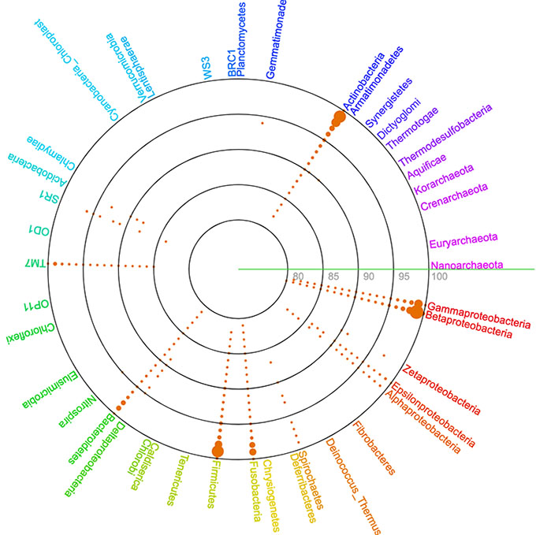

国立遺伝学研究所 ゲノム多様性研究室

- 
MEMBERS
准教授 Associate Professor: 森 宙史（Hiroshi Mori, Ph.D.）
Google Scholar researchmapFields: Microbial genomics & metagenomics, Bioinformatics, Ancient DNA
インタビュー記事
E-mail: hmori_at_.nig.ac.jp
特任研究員 Researcher: 飯塚 朋代(Tomoyo Iizuka)
researchmapFields: Fungal genomics, Bioinformatics
E-mail: toiizuka_at_.nig.ac.jp
総研大博士課程4年 D4 Student & SOKENDAI特別研究員: Kim JAEHA
Fields: Insect gut metagenome
総研大博士課程2年 D2 Student: 髙田 陽平(Youhei Takada)
Fields: Metagenome, Bioinformatics
総研大博士課程2年 D2 Student: 小林 佳世(Kayo Kobayashi)
Fields: Plant-microbe interaction, Metagenome
PREVIOUS MEMBERS
特任研究員 Researcher: 村上 匠（Takumi Murakami, Ph.D.）
Google Scholar researchmap-> 2023年8月1日から東京工業大学生命理工学院助教に。
メンバー募集中
大学院生： 総合研究大学院大学 先端学術院 遺伝学コース での受入れが可能です。ポスドク： 日本学術振興会 特別研究員PD等での受入れが可能です。
Copyright © 2024 ゲノム多様性研究室. All Rights Reserved.